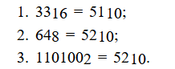
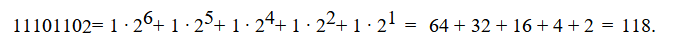
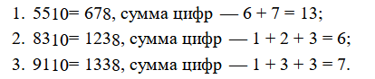

Задание 10. Записывать числа в различных системах счисления
1. Среди приведённых ниже трёх чисел, записанных в различных системах счисления, найдите максимальное и запишите его в ответе в десятичной системе счисления.
В ответе запишите только число, основание системы счисления указывать не нужно. 23(16), 32(8), 11110(2)Решение.
Переведём все числа в десятичную систему счисления:
Таким образом, наибольшим среди этих трёх чисел является число 35.Ответ: 35.
2. Среди приведённых ниже трёх чисел, записанных в различных системах счисления, найдите минимальное и запишите его в ответе в десятичной системе счисления.
В ответе запишите только число, основание системы счисления указывать не нужно. 33(16), 64(8), 110100(2)Решение.
Переведём все числа в десятичную систему счисления:1. 33(16) = 51(10);
2. 64(8) = 52(10);
3. 110100(2) = 52(10).
Таким образом, наименьшим среди этих трёх чисел является число 51.Ответ: 51.
3. Переведите двоичное число 1110110 в десятичную систему счисления.
Решение.

Ответ: 118.
4. Среди приведённых ниже трёх чисел, записанных в десятичной системе счисления, найдите число, сумма цифр которого в восьмеричной записи наименьшая.
В ответе запишите сумму цифр в восьмеричной записи этого числа. 55(10), 83(10), 91(10)Решение.
Переведём все числа в восьмеричную систему счисления:
Таким образом, наименьшей суммой цифр в восьмеричной записи числа является число 6.Ответ: 6.
5. Среди приведённых ниже трёх чисел, записанных в десятичной системе счисления, найдите число, в двоичной записи которого наименьшее количество единиц.
100, 90, 80В ответе запишите количество единиц в двоичной записи этого числа.
Решение.
число 100 в двоичной системе: 1100100 (3 единицы)
число 90 в двоичной системе: 1011010 (4 единицы)
число 80 в двоичной системе: 1010000 (2 единицы)
Ответ: 2.